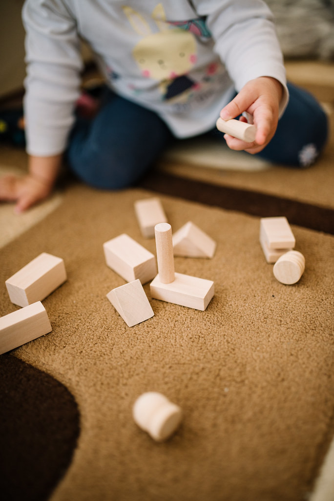
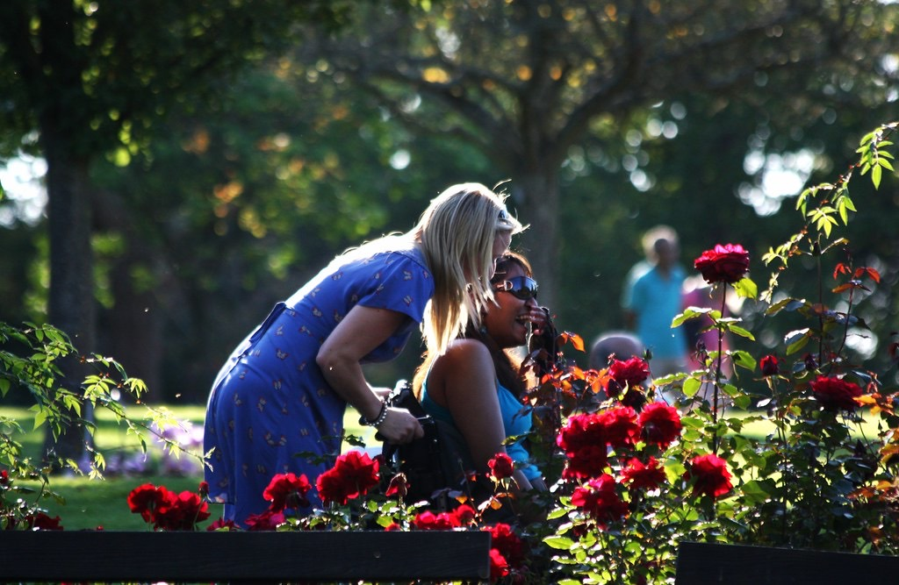
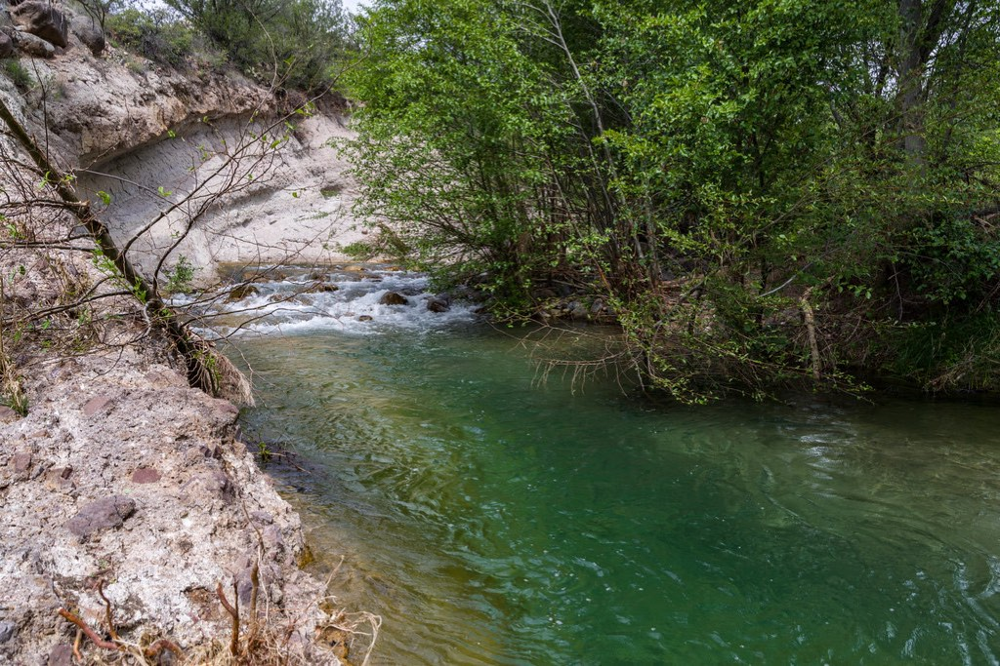

Montessori, ciencia y naturaleza, todos los días
Combinamos la metodología Montessori —con educación cósmica incluida— con un fuerte componente científico. Buena parte de la vida escolar ocurre al aire libre.

Cómo aprendemos
Montessori y educación cósmica
Ambientes preparados, materiales sensoriales y autonomía real. La educación cósmica invita a los niños a entender su lugar en un universo interconectado, desde lo más pequeño hasta lo más grande.
Enfoque científico
Observamos, hacemos experimentos y buscamos respuestas juntos. La curiosidad se cultiva con preguntas, no con respuestas cerradas.
Educación en la naturaleza
Aprovechamos nuestro entorno rural con trekkings regulares a cerros y espacios naturales cercanos, y con jornadas al aire libre casi a diario.
Talleres Raíz y Brote
Agrupamos a los niños y niñas en dos talleres, según su momento de desarrollo. (Rangos de edad referenciales — [CONFIRMAR])
🌱 Taller Raíz
Los primeros años del camino: exploración sensorial, autonomía cotidiana y los primeros pasos dentro del ambiente Montessori. Se plantan las raíces del aprendizaje futuro.
🌿 Taller Brote
El taller donde ese aprendizaje florece: lectoescritura, matemática, ciencias y proyectos que duran semanas.
Plan lector
Todos los meses elegimos un libro distinto para cada taller —Raíz y Brote—, pensado según la etapa lectora de cada grupo. Leer en comunidad es también una forma de conversar sobre el mundo, las emociones y la naturaleza.
Educación emocional
Dedicamos tiempo y espacio a que los niños y niñas reconozcan y expresen lo que sienten. También ofrecemos talleres de crianza consciente para las familias, porque esta educación se construye en conjunto, en la escuela y en la casa.

Salidas pedagógicas
Trekkings a cerros y entornos naturales cercanos, visitas a museos y fundaciones científicas: el aprendizaje también pasa afuera de la escuela.
⛰️ Trekkings
Caminatas regulares por los cerros y el entorno rural de Culiprán.
🏛️ Museos y fundaciones
Visitas a espacios científicos y culturales que amplían lo que se aprende en el aula.
🍳 Cocina y arte
Clases de cocina integradas con arte, donde los niños cocinan y sirven en un "restaurante" de vida práctica dentro de la escuela.
Y también, Dogcentes
Como parte de nuestra propuesta, sumamos "Dogcentes": aprendizaje asistido con perros, una experiencia más dentro de este camino educativo tan diverso.

Exámenes libres
Como proyecto educativo alternativo, nuestros estudiantes validan sus estudios a través de los Exámenes Libres del Mineduc, tal como ocurre en otras escuelas de este tipo en Chile. Esto nos permite sostener una pedagogía distinta sin dejar de cumplir con la validación oficial de estudios.
¿Quieres conocer esta propuesta en persona?
Te invitamos a visitarnos y conversar sobre cómo se vive todo esto día a día.